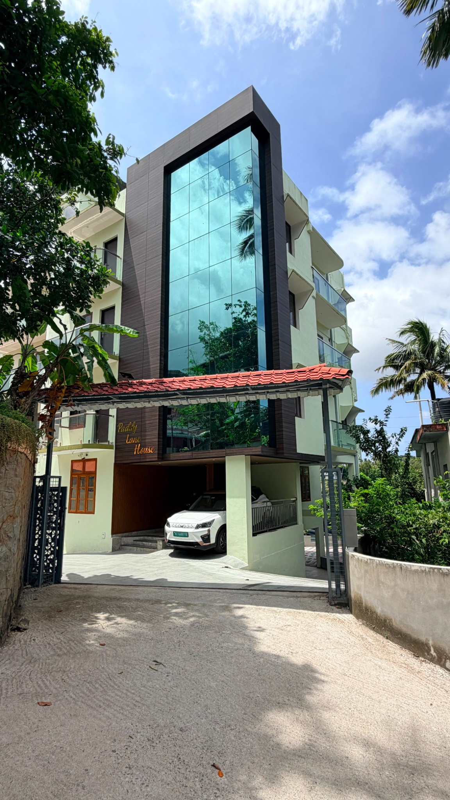
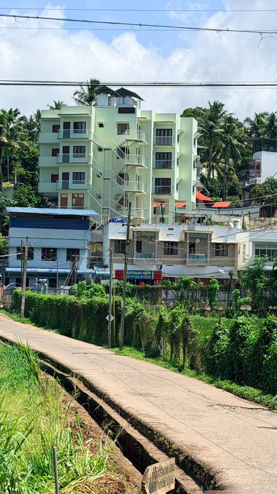
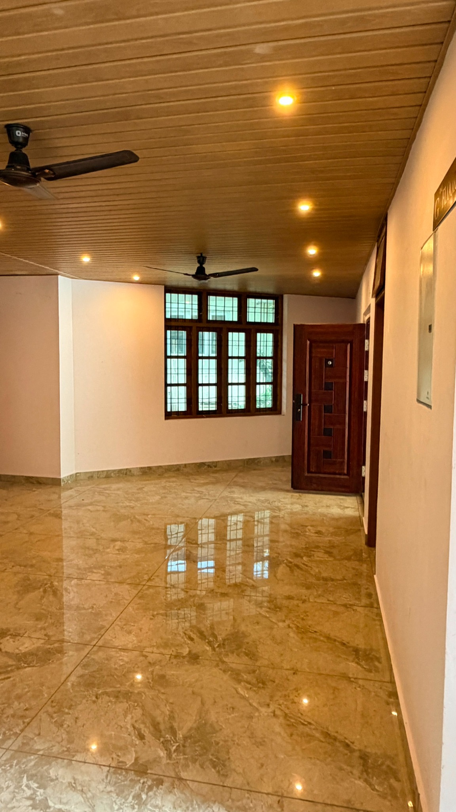
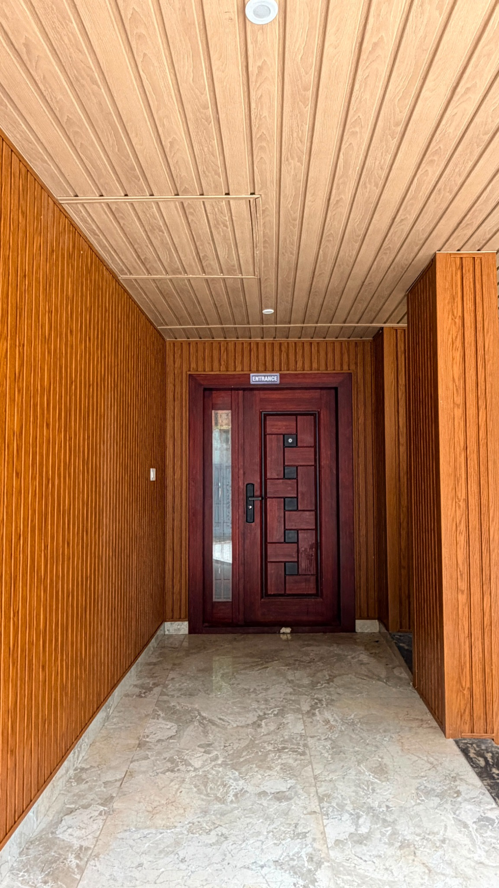
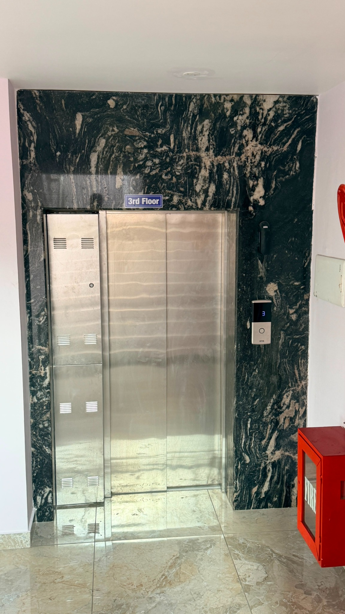
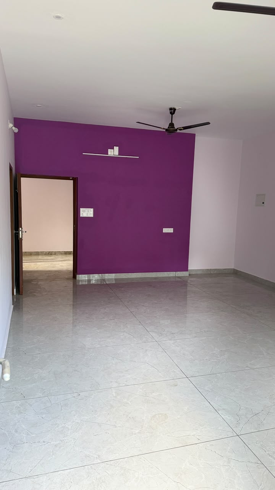
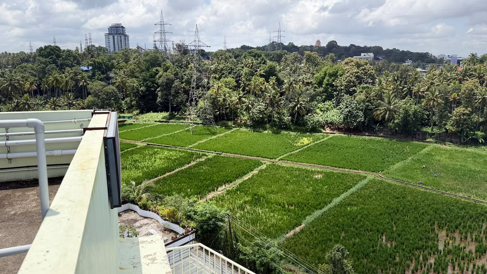

GALLERY
See Paddy Lane House.
Photographs of the building, common areas, parking, entrances and the surroundings.
THE BUILDING
Building & shared spaces
Exterior views, entrances, common areas, elevator access, parking and the approach to the building.








APARTMENTS
Apartment photo categories
More room-by-room photographs will be added as they are provided.

THE LOCATION
Nearby
A few of the places that make the location convenient.


